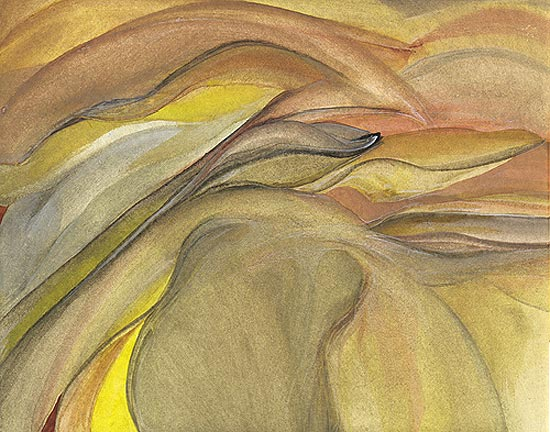
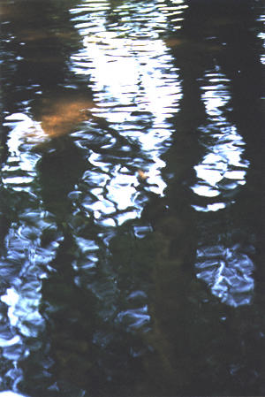
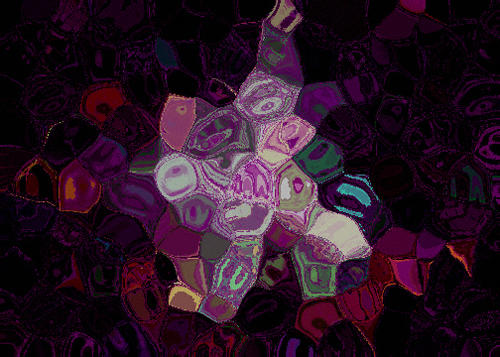
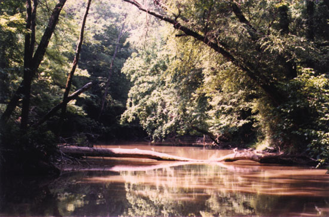
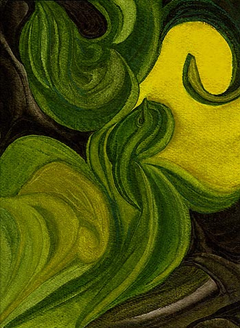

Neon Fruit, watercolor
Lone Pear
Bean Central
6/9/01
Amy Jackson Hoskins
Poetry Visual Art Lone Pear
Neon Fruit
fluorescent watercolorReflections on "Johanna D'Arc de Mongolia," Driving from the Movie Desert Landscape
watercolorthe way the road sounds when it’s wet Oaklands 28, photograph
Flying in an Apple Technicolor Foils and Acids
digital artCreek Meeting Etowah River, Georgia
photographDecember, Dialectics and Physics Ice DNA
digital artInheritance Firefly
watercolor
Neon Fruit, watercolor
Lone Pear
shining green in the
white paper towel,
the light of August sweats brilliant beads,
book's images overwhelm, now
suspended, flat, on the bedside table,
it's Georgia's hot wind blowing under the trees and through
a window faintly, stirring the curtains like a skirt,
a truck muffler passes
in the smooth pale
yellow bedcovers, I
white-peach-colored eat the cool pear ...
first toothy sink
into and through the speckled skin to
juice,
smooth to upper hot lip,
pull, thwack, soft, away with a Saturday evening hand,
glimpse my
own flesh glistening there, and chunk and
chunk of the grainy pleasure-pear
slick it slides to throat,
cluck the middle-rolling bites,
swallow the sweet,
nibble and gnaw to seed-thread,
wrap the tattered-ended remains
respectful in the white again
lay back, open to
relish
Faulkner
again
Fall, ©1987
Amy Jackson

Desert Landscape, watercolor
Reflections on "Johanna D'Arc de Mongolia," Driving from the Movie
floating along the
four-lane late
night and homeward, music and monotony in my skull
mongolian nomads raced
long horses as grasses grew back before them
brilliant-hued silks, bursting through the wet outer subway walls
shattering with laughter
and wind and sun, cheers and whistling
amazing me into sudden movement while driving
everything is slow as Earth to sand blows quickly into deserts
sand rushing into
my eyes from their hooves and speeding
scrubbing me of sight to fill my head like an urn
I shift
the nomads cross over me now on their good horses
the princess leads the way and they are shimmering silken bodies
I am their desert, near the train, where the Spirit Tree stands
May 17, ©1991
Amy Jackson

Oaklands 28, photograph
the way the road sounds when it's wet
like the side of your
face in the dark
the back of your hand again and again
against the what for and why anymore wall, white,
that greasiness of the street and tread of tires black-clinging
feel of your chest against my belly reappearing like a moon, reappearing,
revealing, rebounding with silence, magnetized,
rubbing of opposites
pins from Mama's sewing
box as a child scientific
forcing the polarity
coaxing disharmony from tiny steel points
gravity pulling them
apart at the place where
pinpoints match and fall into her lap lightly
tires screeching,
hold my thought to the road, slick
rain flowing thin contours of your darkest faces, blink
them away, gone my face off of yours to whisper-sleep,
like the back of your fist falls from the wall to your side
like magnets pulling
a dream-fragment of the way the
road sounds when it's wet
©1988
Amy Jackson
published in WordWrights Magazine
Issue #21, January/February, 2001

Technicolor Foils and Acids, digital art
flying in an apple
lip as petal slow-curling
finish it off, quick
spherical wonder of mouth-surprise
you didn't say it
out loud for eight years, but
tonight you found the wing-edge of a tongue
nestled warm-dark-soft-red and beating
time to a fault
just behind my ear
listen to the staccato-artery,
running safely and
wild, back behind the earth they struggle with bones,
finally
blue-eyed schizoid words
emit them foul and true
waste your time, full of it,
high-flying dares the flower,
final cut.
©1988
Amy Jackson
published in WordWrights Magazine
Issue #21, January/February, 2001

Etowah River, Georgia, photograph
Creek Meeting
his face has a dozen
small scars
and his eyes are flitting
at ten or so
and one round, purple deep bruise
on his left cheek
big yellow bike bigger than him
at the creek
fell on the hearth, he says
not a round one, i think
i know this guy killed
turtles down here
the turtle was bitin' everybody
not all turtles bite, i say
they found a baby down here, he says
and it wasn't nice
an animal baby or a person baby, i ask
a person baby ...
i've been to the North Pole
you should write down your
stories, i say, as he follows us
through the woods by the creek
walking his bike
my ... step-Daddy says when
he gets out of jail he's going to...
my uncle says when he gets out of
jail he's going to ...
he didn't do it but the police say he
did ...
when he gets out, when he gets out ...
we agree that people
shouldn't
leave their trash here
we should come back
with a big plastic bag
to pick up trash, i say
he nods, yeah, like those big ones
they bring when people die,
my grandmother died, he says quickly
and she had
we find a basketball
and
reflecting green and silver
sun shade
for when he gets a car
made it all the way up the bank
with that bike and all that
new stuff
we shook hands and
hope to see him soon
© 1/14/01
Amy Jackson
Ice DNA, digital art
December, Dialectics and Physics
-- 60 minute universe
the physics of the art dialectic
newton's random apple eve
science contemplating the mind
the mind contemplating itself
like the flow where the
scientist can't know the frontier
of the brain juice
a string of cubes
where each year lives
where each movie is a grain of sand
compared to the whole of experience
which is carried forward unum
hourglass timeglass cubes
the dialectic of philosophy
and art
when the art is part of the soul
and the soul breathes experience
but the artists lived
in different centuries
they just missed each other
somehow they converse
originate and respond
what bursts original and what from the
hearing senses absorbing
avant garde, native and movement(s)
libraries holding voices dry with spines
galleries present associations through your eyes
magnify silence and sounds in response
like fragments from the depths of the subconscious
coming through the wire
or colonial mirrors of the payors in fine paint
el greco showing their eyes soulful
cortazar speaking from the side of the bench photo
curls and spirals in his words himself
a pearl is formed
of an outline with one crescendo
decrescendo creche, Jesus is born of a December second where joy lives, an
instant,
a grain of sand, a grain of saint, a piece of salt, saltpeter peace
love mixed with all the pain of all those who have died for nothing, nothing?
and the love is perfect compost
wherein new babies form pearl bubbles at breasts
yet it weighs
incandescent the sky in winter broken opalescent lavender ices
the winter glaze in
doom's eyes is shock still milk curdled cold
and something still still survives
it is ghosts living within you amid laughter and traffic gurgling
a leaf falls spiralling
with variable factors: mass, shape,
position on limb, angle on limb, gravity,
air current on start, currents during fall,
this barring people, cars, tree limbs, other leaves, chance
the odd candelabra
as light as smoke,
as heavy as that smoke from a cigarette slowly spirals
hangs in the air,
and falls, your breath into it steady creates a lower stream
which causes smoke to
stretch itself and curl like a cat's back,
or suddenly like a thoughtstream snaps --
a snowflake melts --
December 9, ©1998
Amy Jackson

Firefly, watercolor
Inheritance
crescent moon claw
brooch in thinning black velvet sky
grandmother's pearl sits glowing
soft inside a drawer
back home
streetbulb eclipses
all but a highway
winding wingless asphalt flat
cold and blunt-edged hand
without thinking fingers
without the clutch
of time-ache
at night on a road
where lights are few
the radio off
windows down
silence in motion
the breath of speed
space, give it
back, cautious as a sage
paintbrush an essence
free and loose of us
and back and forth the pulling
acceleration into the curve
watch you
do you don't take
curves of chance and change too
helter-skelter
break you into bits and
billions where you are not, came
grandmother's moon
grandfather's highway
streetlight string the fates
Fall, ©1987
Amy Jackson